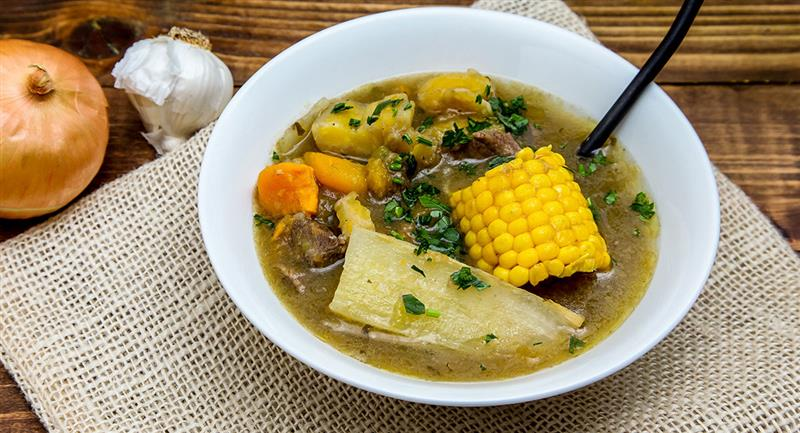

Sancocho

Sancocho de pollo, a hearty soup almost like a stew, is a traditional
dish in the Antioquia region of Colombia that combines potatoes, yuca,
corn, plantains and chicken.
Ingredients
- Poultry: Bone-in skinless chicken thighs or whole cut up chicken
- Veggies: Scallions, tomatoes, potatoes, frozen or fresh peeled yuca
corn, green plantain and garlic
- Seasonings: Cumin, chicken bouillon cubes, salt and fresh cilantro
Steps
- Place onions, garlic and cumin in the blender with 1/4 cup of water.
- in a large pot place the chicken corn, onion mixture, salt and green plantain.
Add the water and bring to a boil, then cover and reduce heat to medium and cook
for about 45 minutes.
- Add potatoes and yuca. Continue cooking for 30 more minutes or until the vegetables
are fork tender. Stir in the cilantro.
- Taste and adjust the seasoning. Serve in large soup bowls, dividing the meat and
chicken and vegetables evenly.
- Enjoy the food!